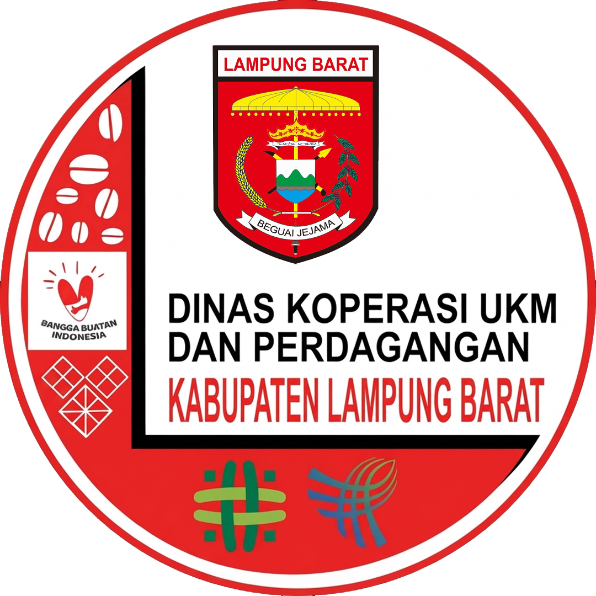

Tambah Konten Baru
Unggah poster, video, tautan web, atau tabel Excel ke playlist layar
Playlist Tayangan TV
0Kelola urutan, jadwal tayang, dan status aktif slide
Memuat daftar slide...

Pusat kendali informasi digital signage
admin@kantor.com
Unggah poster, video, tautan web, atau tabel Excel ke playlist layar
Kelola urutan, jadwal tayang, dan status aktif slide